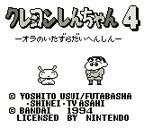
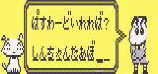
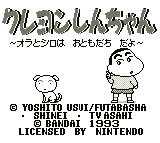

Crayon Shin-chan - Gameboy Games

Controls
- A button: Jump
- B button: Shoot
- Start: Pause
- Select: [not used]
There are some other carnival games that you can play as well. The game has some humorous
power-ups; one power-up turns you into a chicken that can throw eggs at the
enemy. While the game-play is not difficult, this game is cute and funny
enough to hold your attention for awhile.
From Mike Koos:

Turbo Mode: Enter the password: SHINCHANTURBO in hiragana. (In other
words: (shi)(n)(cha)(n)(ta)(a)(bo)). There will be a space or two left over,
but the password will work. I haven't completely tested it, but it seems to
start you off on level 5 with faster speed.

Controls
- A button: Jump
- B button: Shoot
- Start: Pause
- Select: [not used]
No other information available at this time.
Anime Video Game Resource Center © 1998 by Luis A. Cruz